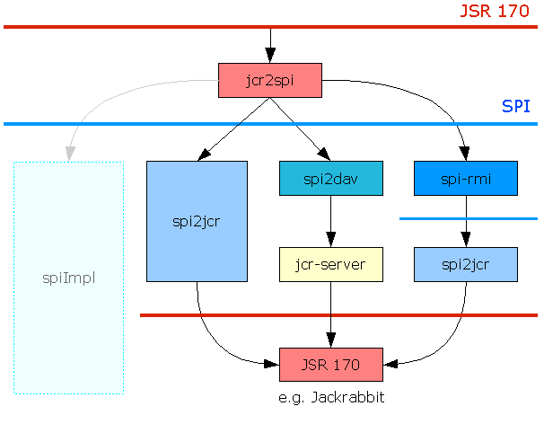

Jackrabbit SPI
This is the SPI component of the Apache Jackrabbit project. The SPI enables a separation between transient and persistent components of the JCR repository. The transient component ("repository client") is implemented on top of the persistent component ("repository server") as a consumer of the SPI and, in turn, exposes the JCR API to the application. The SPI is not intended to be used by the application directly.

Primary Goals
The Primary goals of the SPI approach are to define support for client-server architecture and to ease the implementation of the JCR API.
Client-Server architecture
The SPI provides a natural division between the client and server components of a remote JCR repository. The SPI is designed with this usage in mind, enabling an implementation to minimize network traffic. The SPI lends itself to protocol mappings to protocols like WebDAV, SOAP or others in a straightforward yet meaningful way.
Implementation Support
Introducing the SPI can simplify the implementation of JCR on top of an existing repository by reducing the task to one of implementing the SPI. Such an implementation might then rely on a generic transient layer (such as e.g. Jackrabbit JCR to SPI) to provide the JCR API.
Architecture and Design Overview
The specific functions exposed by the SPI are:
- Reading from and writing to the persistent storage.
- Authentication
- Access control
- Locking
- Query
- Versioning
- Direct to workspace XML import
- Storage of the central namespace registry
- Node type management, enforcement of constraints as well as definition storage.
Therefore SPI designs a set of interfaces and methods needed to expose the functionality of the persistent layer of a compliant JCR repository. The main interfaces of the SPI are RepositoryService and Batch.
The RepositoryServiceinterface defines the methods used to retrieve information from the persistent layer. In addition it contains the methods that affect the persistent state of the repository.
The Batch is an interface to an ordered list of primitive operations against the persistent layer. The Batch is then submitted to the RepositoryService to make the specified sequence of changes.
In addition the SPI defines interfaces for internal representations of JCR name, JCR nath and Item identifiers. The SPI itself only uses names and paths in their fully qualified.
Existing Implementations
The Jackrabbit project currently provides a single SPI implementation:
- Jackrabbit SPI to JCR: An implementation of the SPI interfaces wrapping an implementation of the JCR API such as e.g. Jackrabbit Core.
Other SPI implementations can be found in the sandbox folder of the Jackrabbit project.
- SPI to WebDAV: SPI implementation on top of WebDAV connecting to a Jackrabbit JCR Server.
- SPI-RMI: A RMI layer.used to remote any SPI implementation. While Jackrabbit SPI to JCR and SPI to WebDAV really are repository implementations, the SPI-RMI is rather a 'repeater' for SPI calls using RMI.
- SPI Logger: Utility implementation to log SPI usage.
See the image below for a overview over existing and planned SPI implementations.
